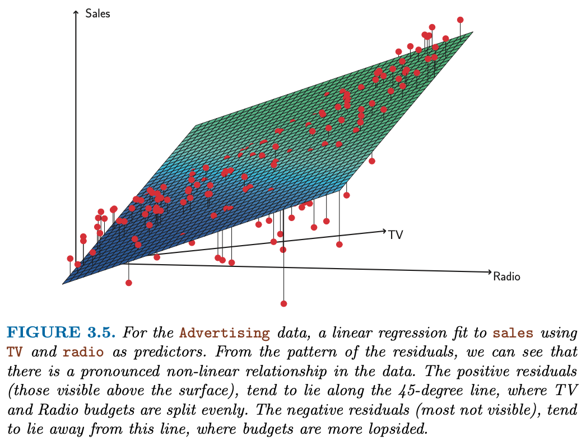
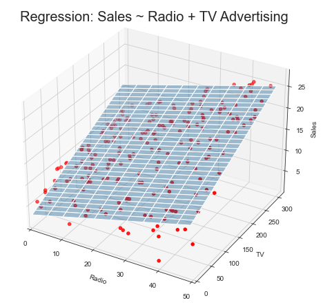
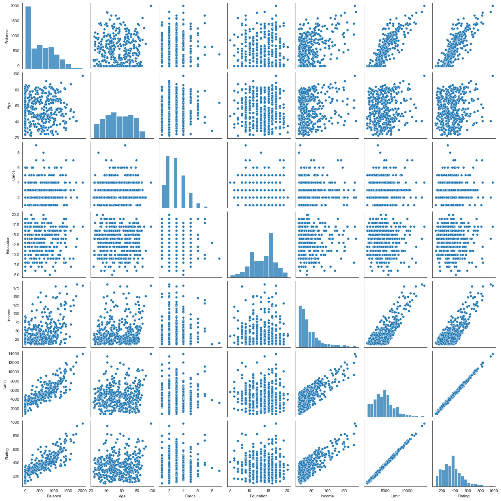
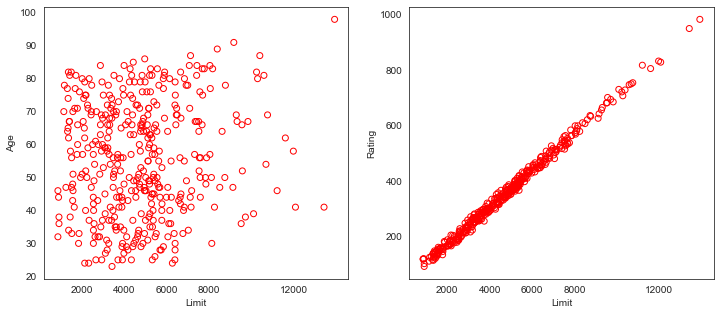
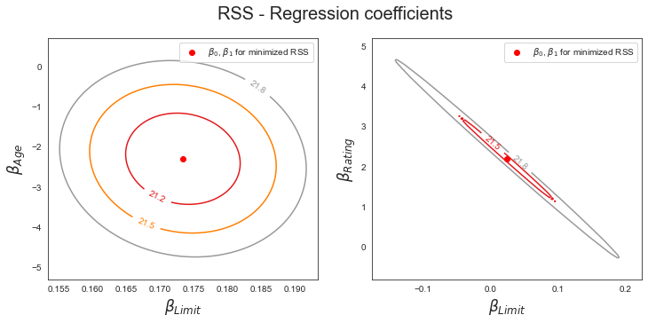
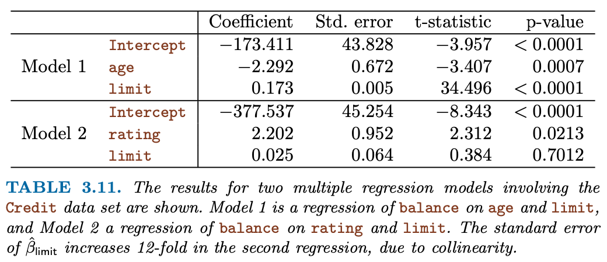
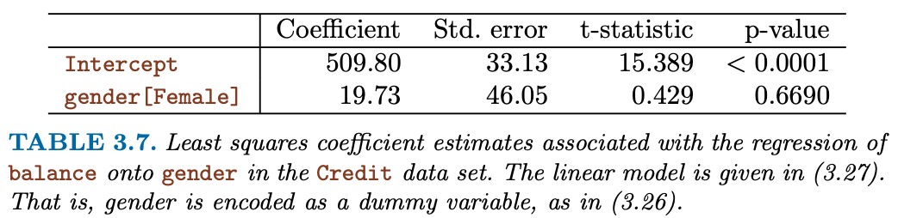
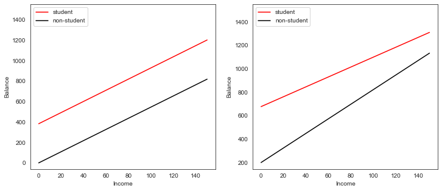
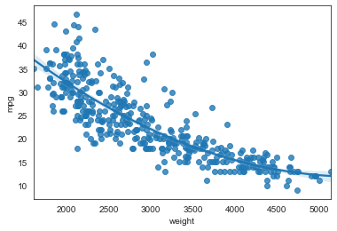
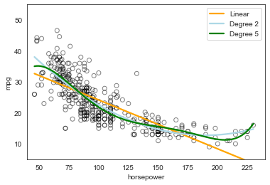

import pandas as pd
import numpy as np
import matplotlib.pyplot as plt
from mpl_toolkits.mplot3d import axes3d
import seaborn as sns
#import scipy
from sklearn.preprocessing import scale
import sklearn.linear_model as skl_lm
from sklearn.metrics import mean_squared_error, r2_score
import statsmodels.api as sm
import statsmodels.formula.api as smf
%matplotlib inline
sns.set_style('white')12 Multiple Linear Regression
(Chapter 3 ISL Book) How can we extend our analysis of the advertising data in order to accommodate these two additional predictors? One option is to run three separate simple linear regressions, each of which uses a different advertising medium as a predictor.
Importing Standard Libs
Warmup Exercise
Beer Chips
Load Datasets
Datasets available on http://faculty.marshall.usc.edu/gareth-james/ISL/
%run importData.pyTable 3.3
est = smf.ols('Sales ~ Radio', advertising).fit()
est.summary().tables[1]| coef | std err | t | P>|t| | [0.025 | 0.975] | |
|---|---|---|---|---|---|---|
| Intercept | 9.3116 | 0.563 | 16.542 | 0.000 | 8.202 | 10.422 |
| Radio | 0.2025 | 0.020 | 9.921 | 0.000 | 0.162 | 0.243 |
est = smf.ols('Sales ~ Newspaper', advertising).fit()
est.summary().tables[1]| coef | std err | t | P>|t| | [0.025 | 0.975] | |
|---|---|---|---|---|---|---|
| Intercept | 12.3514 | 0.621 | 19.876 | 0.000 | 11.126 | 13.577 |
| Newspaper | 0.0547 | 0.017 | 3.300 | 0.001 | 0.022 | 0.087 |
est = smf.ols('Sales ~ TV', advertising).fit()
est.summary().tables[1]| coef | std err | t | P>|t| | [0.025 | 0.975] | |
|---|---|---|---|---|---|---|
| Intercept | 7.0326 | 0.458 | 15.360 | 0.000 | 6.130 | 7.935 |
| TV | 0.0475 | 0.003 | 17.668 | 0.000 | 0.042 | 0.053 |
However, the approach of fitting a separate simple linear regression model for each predictor is not entirely satisfactory. First of all, it is unclear how to make a single prediction of sales given levels of the three advertising media budgets, since each of the budgets is associated with a separate regression equation. Second, each of the three regression equations ignores the other two media in forming estimates for the regression coefficients. We will see shortly that if the media budgets are correlated with each other in the 200 markets that constitute our data set, then this can lead to very misleading estimates of the individual media effects on sales. Instead of fitting a separate simple linear regression model for each predictor, a better approach is to extend the simple linear regression model (3.5) so that it can directly accommodate multiple predictors. We can do this by giving each predictor a separate slope coefficient in a single model. In general, suppose that we have p distinct predictors. Then the multiple linear regression model takes the form
\[ Y = \beta_0 + \beta_1 X_1 + \ldots + \beta_p X_p + \epsilon \]
We interpret \(\beta_j\) as the average effect on Y of a one unit increase in \(X_j\), holding all other predictors fixed.
est = smf.ols('Sales ~ TV + Radio + Newspaper', advertising).fit()
#print(est.summary())
est.summary().tables[1]| coef | std err | t | P>|t| | [0.025 | 0.975] | |
|---|---|---|---|---|---|---|
| Intercept | 2.9389 | 0.312 | 9.422 | 0.000 | 2.324 | 3.554 |
| TV | 0.0458 | 0.001 | 32.809 | 0.000 | 0.043 | 0.049 |
| Radio | 0.1885 | 0.009 | 21.893 | 0.000 | 0.172 | 0.206 |
| Newspaper | -0.0010 | 0.006 | -0.177 | 0.860 | -0.013 | 0.011 |
Table 3.4 & 3.6
We interpret these results as follows: for a given amount of TV and newspaper advertising, spending an additional $1,000 on radio advertising leads to an increase in sales by approximately 189 units. Comparing these coefficient estimates to those displayed in Tables 3.1 and 3.3, we notice that the multiple regression coefficient estimates for TV and radio are pretty similar to the simple linear regression coefficient estimates. However, while the newspaper regression coefficient estimate in Table 3.3 was significantly non-zero, the coefficient estimate for newspaper in the multiple regression model is close to zero, and the corresponding p-value is no longer significant, with a value around 0.86. This illustrates that the simple and multiple regression coefficients can be quite different. This difference stems from the fact that in the simple regression case, the slope term represents the average effect of a 1,000 increase in newspaper advertising, ignoring other predictors such as TV and radio. In contrast, in the multiple regression setting, the coefficient for newspaper represents the average effect of increasing newspaper spending by 1,000 while holding TV and radio fixed.
Table 3.5 - Correlation Matrix
Does it make sense for the multiple regression to suggest no relationship between sales and newspaper while the simple linear regression implies the opposite? In fact it does. Consider the correlation matrix for the three predictor variables and response variable, displayed in Table 3.5. Notice that the correlation between radio and newspaper is 0.35. This reveals a tendency to spend more on newspaper advertising in markets where more is spent on radio advertising. Now suppose that the multiple regression is correct and newspaper advertising has no direct impact on sales, but radio advertising does increase sales. Then in markets where we spend more on radio our sales will tend to be higher, and as our correlation matrix shows, we also tend to spend more on newspaper advertising in those same markets. Hence, in a simple linear regression which only examines sales versus newspaper, we will observe that higher values of newspaper tend to be associated with higher values of sales, even though newspaper advertising does not actually affect sales. So newspaper sales are a surrogate for radio advertising; newspaper gets “credit” for the effect of radio on sales. This slightly counterintuitive result is very common in many real life situations. Consider an absurd example to illustrate the point. Running a regression of shark attacks versus ice cream sales for data collected at a given beach community over a period of time would show a positive relationship, similar to that seen between sales and newspaper. Of course no one (yet) has suggested that ice creams should be banned at beaches to reduce shark attacks. In reality, higher temperatures cause more people to visit the beach, which in turn results in more ice cream sales and more shark attacks. A multiple regression of attacks versus ice cream sales and temperature reveals that, as intuition implies, the former predictor is no longer significant after adjusting for temperature.
advertising.corr()| Unnamed: 0 | TV | Radio | Newspaper | Sales | |
|---|---|---|---|---|---|
| Unnamed: 0 | 1.000000 | 0.017715 | -0.110680 | -0.154944 | -0.051616 |
| TV | 0.017715 | 1.000000 | 0.054809 | 0.056648 | 0.782224 |
| Radio | -0.110680 | 0.054809 | 1.000000 | 0.354104 | 0.576223 |
| Newspaper | -0.154944 | 0.056648 | 0.354104 | 1.000000 | 0.228299 |
| Sales | -0.051616 | 0.782224 | 0.576223 | 0.228299 | 1.000000 |
Figure 3.5 - Multiple Linear Regression

Sklearn’s way
regr = skl_lm.LinearRegression()
X = advertising[['Radio', 'TV']].values
y = advertising.Sales
regr.fit(X,y)
print(regr.coef_)
print(regr.intercept_)[0.18799423 0.04575482]
2.9210999124051398# What are the min/max values of Radio & TV?
# Use these values to set up the grid for plotting.
advertising[['Radio', 'TV']].describe()| Radio | TV | |
|---|---|---|
| count | 200.000000 | 200.000000 |
| mean | 23.264000 | 147.042500 |
| std | 14.846809 | 85.854236 |
| min | 0.000000 | 0.700000 |
| 25% | 9.975000 | 74.375000 |
| 50% | 22.900000 | 149.750000 |
| 75% | 36.525000 | 218.825000 |
| max | 49.600000 | 296.400000 |
# Create a coordinate grid
Radio = np.arange(0,50)
TV = np.arange(0,300)
B1, B2 = np.meshgrid(Radio, TV, indexing='xy')
Z = np.zeros((TV.size, Radio.size))
for (i,j),v in np.ndenumerate(Z):
Z[i,j] =(regr.intercept_ + B1[i,j]*regr.coef_[0] + B2[i,j]*regr.coef_[1])# Create plot
fig = plt.figure(figsize=(10,6))
fig.suptitle('Regression: Sales ~ Radio + TV Advertising', fontsize=20)
ax = axes3d.Axes3D(fig)
ax.plot_surface(B1, B2, Z, rstride=10, cstride=5, alpha=0.4)
ax.scatter3D(advertising.Radio, advertising.TV, advertising.Sales, c='r')
ax.set_xlabel('Radio')
ax.set_xlim(0,50)
ax.set_ylabel('TV')
ax.set_ylim(ymin=0)
ax.set_zlabel('Sales');
Other Considerations in the Regression Model
Collinearity
“Exact Collinearity”
Tasks
You try to impress your investors with the number of advertising channels that you have investigated. So you make a copy of the TV column, call it facebook and refit the linear multiple regression.
Multi-Collinearity: You have learned from your foolish mistakes and are more ambitiously creating fake data: You create a new column instagram by adding TV and Radio and subtracting 3 times Newspaper. Now, refit the linear multiple regression.
advertising["facebook"] = advertising.TV
#advertising.info()
est = smf.ols('Sales ~ TV + Radio + Newspaper + facebook', advertising).fit()
es = est.summary()
es.tables[1]| coef | std err | t | P>|t| | [0.025 | 0.975] | |
|---|---|---|---|---|---|---|
| Intercept | 2.9389 | 0.312 | 9.422 | 0.000 | 2.324 | 3.554 |
| TV | 0.0229 | 0.001 | 32.809 | 0.000 | 0.022 | 0.024 |
| Radio | 0.1885 | 0.009 | 21.893 | 0.000 | 0.172 | 0.206 |
| Newspaper | -0.0010 | 0.006 | -0.177 | 0.860 | -0.013 | 0.011 |
| 0.0229 | 0.001 | 32.809 | 0.000 | 0.022 | 0.024 |
Multicollinearity is treated VERY differently in statsmodels than in R as discussed in this post on medium as well on stackoverflow. Worthwhile to inspect the condition number:
es.tables[2]| Omnibus: | 60.414 | Durbin-Watson: | 2.084 |
|---|---|---|---|
| Prob(Omnibus): | 0.000 | Jarque-Bera (JB): | 151.241 |
| Skew: | -1.327 | Prob(JB): | 1.44e-33 |
| Kurtosis: | 6.332 | Cond. No. | 2.61e+16 |
advertising["instagram"] = advertising.TV +advertising.Radio - 3*advertising.Newspaper
#advertising.info()
est = smf.ols('Sales ~ TV + Radio + Newspaper + instagram', advertising).fit()
es = est.summary()
es.tables[1]| coef | std err | t | P>|t| | [0.025 | 0.975] | |
|---|---|---|---|---|---|---|
| Intercept | 2.9389 | 0.312 | 9.422 | 0.000 | 2.324 | 3.554 |
| TV | 0.0260 | 0.002 | 11.660 | 0.000 | 0.022 | 0.030 |
| Radio | 0.1687 | 0.008 | 22.469 | 0.000 | 0.154 | 0.184 |
| Newspaper | 0.0583 | 0.002 | 27.223 | 0.000 | 0.054 | 0.063 |
| 0.0198 | 0.002 | 10.679 | 0.000 | 0.016 | 0.023 |
es.tables[2]| Omnibus: | 60.414 | Durbin-Watson: | 2.084 |
|---|---|---|---|
| Prob(Omnibus): | 0.000 | Jarque-Bera (JB): | 151.241 |
| Skew: | -1.327 | Prob(JB): | 1.44e-33 |
| Kurtosis: | 6.332 | Cond. No. | 2.32e+16 |
Figure 3.6
What about non-exact collinearities?
credit = pd.read_csv('../data/Credit.csv', usecols=list(range(1,12)))
credit['Student2'] = credit.Student.map({'No':0, 'Yes':1})
credit.head()| Income | Limit | Rating | Cards | Age | Education | Gender | Student | Married | Ethnicity | Balance | Student2 | |
|---|---|---|---|---|---|---|---|---|---|---|---|---|
| 0 | 14.891 | 3606 | 283 | 2 | 34 | 11 | Male | No | Yes | Caucasian | 333 | 0 |
| 1 | 106.025 | 6645 | 483 | 3 | 82 | 15 | Female | Yes | Yes | Asian | 903 | 1 |
| 2 | 104.593 | 7075 | 514 | 4 | 71 | 11 | Male | No | No | Asian | 580 | 0 |
| 3 | 148.924 | 9504 | 681 | 3 | 36 | 11 | Female | No | No | Asian | 964 | 0 |
| 4 | 55.882 | 4897 | 357 | 2 | 68 | 16 | Male | No | Yes | Caucasian | 331 | 0 |
sns.pairplot(credit[['Balance','Age','Cards','Education','Income','Limit','Rating']]);
Figure 3.14
fig, (ax1,ax2) = plt.subplots(1,2, figsize=(12,5))
# Left plot
ax1.scatter(credit.Limit, credit.Age, facecolor='None', edgecolor='r')
ax1.set_ylabel('Age')
# Right plot
ax2.scatter(credit.Limit, credit.Rating, facecolor='None', edgecolor='r')
ax2.set_ylabel('Rating')
for ax in fig.axes:
ax.set_xlabel('Limit')
ax.set_xticks([2000,4000,6000,8000,12000])
“High Collinearity”
Collinearity refers to the situation in which two or more predictor variables are closely related to one another. The concept of collinearity is illustrated in Figure 3.14 using the Credit data set. In the left-hand panel of Figure 3.14, the two predictors limit and age appear to have no obvious relationship. In contrast, in the right-hand panel of Figure 3.14, the predictors limit and rating are very highly correlated with each other, and we say that they are collinear. The presence of collinearity can pose problems in the regression context, since it can be difficult to separate out the individual effects of collinear variables on the response. In other words, since limit and rating tend to increase or decrease together, it can be difficult to determine how each one separately is associated with the response, balance.
Figure 3.15
y = credit.Balance
# Regression for left plot
X = credit[['Age', 'Limit']].values
regr1 = skl_lm.LinearRegression()
regr1.fit(scale(X.astype('float'), with_std=False), y)
print('Age/Limit\n',regr1.intercept_)
print(regr1.coef_)
# Regression for right plot
X2 = credit[['Rating', 'Limit']].values
regr2 = skl_lm.LinearRegression()
regr2.fit(scale(X2.astype('float'), with_std=False), y)
print('\nRating/Limit\n',regr2.intercept_)
print(regr2.coef_)Age/Limit
520.0150000000001
[-2.29148553 0.17336497]
Rating/Limit
520.015
[2.20167217 0.02451438]
Figure 3.15 illustrates some of the difficulties that can result from collinearity. The left-hand panel of Figure 3.15 is a contour plot of the RSS (3.22) associated with different possible coefficient estimates for the regression of balance on limit and age. Each ellipse represents a set of coefficients that correspond to the same RSS, with ellipses nearest to the center taking on the lowest values of RSS. The dots and associated dashed lines represent the coefficient estimates that result in the smallest possible RSS—in other words, these are the least squares estimates. The axes for limit and age have been scaled so that the plot includes possible coefficient estimates that are up to four standard errors on either side of the least squares estimates. Thus the plot includes all plausible values for the coefficients. For example, we see that the true limit coefficient is almost certainly somewhere between 0.15 and 0.20. In contrast, the right-hand panel of Figure 3.15 displays contour plots of the RSS associated with possible coefficient estimates for the regression of balance onto limit and rating, which we know to be highly collinear. Now the contours run along a narrow valley; there is a broad range of values for the coefficient estimates that result in equal values for RSS. Hence a small change in the data could cause the pair of coefficient values that yield the smallest RSS—that is, the least squares estimates—to move anywhere along this valley. This results in a great deal of uncertainty in the coefficient estimates. Notice that the scale for the limit coefficient now runs from roughly −0.2 to 0.2; this is an eight-fold increase over the plausible range of the limit coefficient in the regression with age.
|  |
| Table 3.11 compares the coefficient estimates obtained from two separate multiple regression models. The first is a regression of balance on age and limit, and the second is a regression of balance on rating and limit. In the first regression, both age and limit are highly significant with very small pvalues. In the second, the collinearity between limit and rating has caused the standard error for the limit coefficient estimate to increase by a factor of 12 and the p-value to increase to 0.701. In other words, the importance of the limit variable has been masked due to the presence of collinearity. To avoid such a situation, it is desirable to identify and address potential collinearity problems while fitting the model. |
Qualitative/Categorical Variables
- Dummy Coding
- Interpretation of coefficients
Table 3.7

est = smf.ols('Balance ~ Gender ', credit).fit()
est.summary().tables[1]| coef | std err | t | P>|t| | [0.025 | 0.975] | |
|---|---|---|---|---|---|---|
| Intercept | 509.8031 | 33.128 | 15.389 | 0.000 | 444.675 | 574.931 |
| Gender[T.Female] | 19.7331 | 46.051 | 0.429 | 0.669 | -70.801 | 110.267 |
Table 3.8
np.unique(credit["Ethnicity"])
credit.groupby("Ethnicity")["Balance"].mean()Ethnicity
African American 531.000000
Asian 512.313725
Caucasian 518.497487
Name: Balance, dtype: float64est = smf.ols('Balance ~ Ethnicity', credit).fit()
est.summary().tables[1]| coef | std err | t | P>|t| | [0.025 | 0.975] | |
|---|---|---|---|---|---|---|
| Intercept | 531.0000 | 46.319 | 11.464 | 0.000 | 439.939 | 622.061 |
| Ethnicity[T.Asian] | -18.6863 | 65.021 | -0.287 | 0.774 | -146.515 | 109.142 |
| Ethnicity[T.Caucasian] | -12.5025 | 56.681 | -0.221 | 0.826 | -123.935 | 98.930 |
Interactions
Table 3.9
est = smf.ols('Sales ~ TV + Radio + TV*Radio', advertising).fit()
est.summary().tables[1]| coef | std err | t | P>|t| | [0.025 | 0.975] | |
|---|---|---|---|---|---|---|
| Intercept | 6.7502 | 0.248 | 27.233 | 0.000 | 6.261 | 7.239 |
| TV | 0.0191 | 0.002 | 12.699 | 0.000 | 0.016 | 0.022 |
| Radio | 0.0289 | 0.009 | 3.241 | 0.001 | 0.011 | 0.046 |
| TV:Radio | 0.0011 | 5.24e-05 | 20.727 | 0.000 | 0.001 | 0.001 |
Interaction between qualitative and quantitative variables
credit["Income2"] = credit["Income"] + scipy.stats.norm.rvs(400)est1 = smf.ols('Balance ~ Income + Income2 + C(Student)', credit).fit()
regr1 = est1.params
est2 = smf.ols('Balance ~ Income + Income*C(Student)', credit).fit()
regr2 = est2.params
print('Regression 1 - without interaction term')
est1.summary().tables[1]Regression 1 - without interaction term| coef | std err | t | P>|t| | [0.025 | 0.975] | |
|---|---|---|---|---|---|---|
| Intercept | -0.0123 | 0.002 | -7.143 | 0.000 | -0.016 | -0.009 |
| C(Student)[T.Yes] | 382.6705 | 65.311 | 5.859 | 0.000 | 254.272 | 511.069 |
| Income | 5.4557 | 0.621 | 8.779 | 0.000 | 4.234 | 6.677 |
| Income2 | 0.5287 | 0.081 | 6.506 | 0.000 | 0.369 | 0.688 |
np.mean(credit["Income"])45.218885000000036est2 = smf.ols('Balance ~ Income + Income*C(Ethnicity)*C(Student)', credit).fit()
est2.summary().tables[1]| coef | std err | t | P>|t| | [0.025 | 0.975] | |
|---|---|---|---|---|---|---|
| Intercept | 145.1346 | 64.922 | 2.236 | 0.026 | 17.492 | 272.777 |
| C(Ethnicity)[T.Asian] | -15.5992 | 94.976 | -0.164 | 0.870 | -202.332 | 171.133 |
| C(Ethnicity)[T.Caucasian] | 122.8200 | 80.930 | 1.518 | 0.130 | -36.297 | 281.937 |
| C(Student)[T.Yes] | 427.5858 | 246.321 | 1.736 | 0.083 | -56.706 | 911.877 |
| C(Ethnicity)[T.Asian]:C(Student)[T.Yes] | 281.3665 | 297.683 | 0.945 | 0.345 | -303.906 | 866.639 |
| C(Ethnicity)[T.Caucasian]:C(Student)[T.Yes] | -109.7842 | 309.373 | -0.355 | 0.723 | -718.041 | 498.473 |
| Income | 7.1950 | 1.069 | 6.728 | 0.000 | 5.093 | 9.298 |
| Income:C(Ethnicity)[T.Asian] | 0.0963 | 1.667 | 0.058 | 0.954 | -3.181 | 3.374 |
| Income:C(Ethnicity)[T.Caucasian] | -2.0995 | 1.371 | -1.531 | 0.127 | -4.796 | 0.597 |
| Income:C(Student)[T.Yes] | -0.0693 | 3.716 | -0.019 | 0.985 | -7.375 | 7.236 |
| Income:C(Ethnicity)[T.Asian]:C(Student)[T.Yes] | -4.6311 | 4.475 | -1.035 | 0.301 | -13.429 | 4.167 |
| Income:C(Ethnicity)[T.Caucasian]:C(Student)[T.Yes] | -0.9514 | 5.431 | -0.175 | 0.861 | -11.630 | 9.727 |
print('\nRegression 2 - with interaction term')
est2.summary().tables[1]
Regression 2 - with interaction term| coef | std err | t | P>|t| | [0.025 | 0.975] | |
|---|---|---|---|---|---|---|
| Intercept | 145.1346 | 64.922 | 2.236 | 0.026 | 17.492 | 272.777 |
| C(Ethnicity)[T.Asian] | -15.5992 | 94.976 | -0.164 | 0.870 | -202.332 | 171.133 |
| C(Ethnicity)[T.Caucasian] | 122.8200 | 80.930 | 1.518 | 0.130 | -36.297 | 281.937 |
| C(Student)[T.Yes] | 427.5858 | 246.321 | 1.736 | 0.083 | -56.706 | 911.877 |
| C(Ethnicity)[T.Asian]:C(Student)[T.Yes] | 281.3665 | 297.683 | 0.945 | 0.345 | -303.906 | 866.639 |
| C(Ethnicity)[T.Caucasian]:C(Student)[T.Yes] | -109.7842 | 309.373 | -0.355 | 0.723 | -718.041 | 498.473 |
| Income | 7.1950 | 1.069 | 6.728 | 0.000 | 5.093 | 9.298 |
| Income:C(Ethnicity)[T.Asian] | 0.0963 | 1.667 | 0.058 | 0.954 | -3.181 | 3.374 |
| Income:C(Ethnicity)[T.Caucasian] | -2.0995 | 1.371 | -1.531 | 0.127 | -4.796 | 0.597 |
| Income:C(Student)[T.Yes] | -0.0693 | 3.716 | -0.019 | 0.985 | -7.375 | 7.236 |
| Income:C(Ethnicity)[T.Asian]:C(Student)[T.Yes] | -4.6311 | 4.475 | -1.035 | 0.301 | -13.429 | 4.167 |
| Income:C(Ethnicity)[T.Caucasian]:C(Student)[T.Yes] | -0.9514 | 5.431 | -0.175 | 0.861 | -11.630 | 9.727 |
# Income (x-axis)
income = np.linspace(0,150)
# Balance without interaction term (y-axis)
student1 = np.linspace(regr1['Intercept']+regr1['C(Student)[T.Yes]'],
regr1['Intercept']+regr1['C(Student)[T.Yes]']+150*regr1['Income'])
non_student1 = np.linspace(regr1['Intercept'], regr1['Intercept']+150*regr1['Income'])
# Balance with iteraction term (y-axis)
student2 = np.linspace(regr2['Intercept']+regr2['C(Student)[T.Yes]'],
regr2['Intercept']+regr2['C(Student)[T.Yes]']+
150*(regr2['Income']+regr2['Income:C(Student)[T.Yes]']))
non_student2 = np.linspace(regr2['Intercept'], regr2['Intercept']+150*regr2['Income'])
# Create plot
fig, (ax1,ax2) = plt.subplots(1,2, figsize=(12,5))
ax1.plot(income, student1, 'r', income, non_student1, 'k')
ax2.plot(income, student2, 'r', income, non_student2, 'k')
for ax in fig.axes:
ax.legend(['student', 'non-student'], loc=2)
ax.set_xlabel('Income')
ax.set_ylabel('Balance')
ax.set_ylim(ymax=1550)
Non-linear relationships
Figure 3.8
auto = pd.read_csv('./data/Auto.csv', na_values='?').dropna()sns.regplot(x='weight', y='mpg', data=auto,fit_reg=True, order=2);<AxesSubplot:xlabel='weight', ylabel='mpg'>
# With Seaborn's regplot() you can easily plot higher order polynomials.
plt.scatter(x=auto.horsepower, y=auto.mpg, facecolors='None', edgecolors='k', alpha=.5)
sns.regplot(x=auto.horsepower, y=auto.mpg, ci=None, label='Linear', scatter=False, color='orange')
sns.regplot(x=auto.horsepower, y=auto.mpg, ci=None, label='Degree 2', order=2, scatter=False, color='lightblue')
sns.regplot(x=auto.horsepower, y=auto.mpg, ci=None, label='Degree 5', order=5, scatter=False, color='g')
plt.legend()
plt.ylim(5,55)
plt.xlim(40,240);
Table 3.10
auto['horsepower2'] = auto.horsepower**2
auto.head(3)| mpg | cylinders | displacement | horsepower | weight | acceleration | year | origin | name | Manufacturer | horsepower2 | |
|---|---|---|---|---|---|---|---|---|---|---|---|
| 0 | 18.0 | 8 | 307.0 | 130 | 3504 | 12.0 | 70 | 1 | chevrolet chevelle malibu | chevrolet | 16900 |
| 1 | 15.0 | 8 | 350.0 | 165 | 3693 | 11.5 | 70 | 1 | buick skylark 320 | buick | 27225 |
| 2 | 18.0 | 8 | 318.0 | 150 | 3436 | 11.0 | 70 | 1 | plymouth satellite | plymouth | 22500 |
est = smf.ols('mpg ~ horsepower + horsepower2', auto).fit()
est.summary().tables[1]| coef | std err | t | P>|t| | [0.025 | 0.975] | |
|---|---|---|---|---|---|---|
| Intercept | 56.9001 | 1.800 | 31.604 | 0.000 | 53.360 | 60.440 |
| horsepower | -0.4662 | 0.031 | -14.978 | 0.000 | -0.527 | -0.405 |
| horsepower2 | 0.0012 | 0.000 | 10.080 | 0.000 | 0.001 | 0.001 |